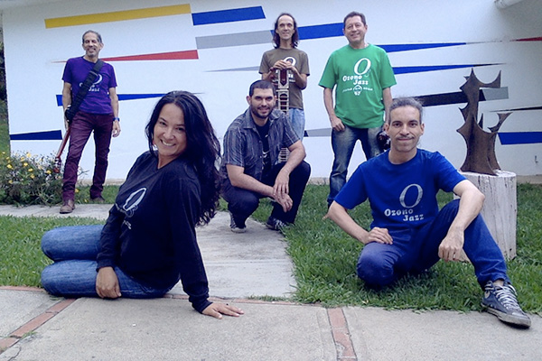
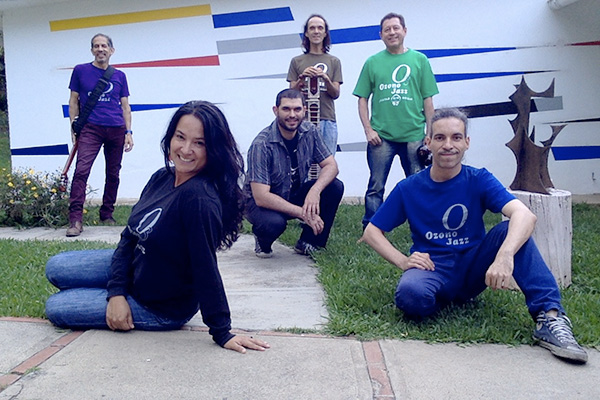

CAMPAÑAS POR EL
SONIDO DE LA TIERRA:
1. ¡PLAYAS SIN
BULLA!
Para disminuir la "contaminación
musical" en las playas venezolanas:

Venezuela tiene
sus playas sucias de ruido: Ir a las playas
venezolanas es una tortura sonora.
¡Insoportable!
En el 2012, nos declaramos activistas
ecológicos y promulgamos la campaña
¡Playas sin Bulla!
para que no se escuche música amplificada en
las playas del país y menos, varias músicas
amplificadas al mismo tiempo.
2. ¡OIGAMOS
EL SILENCIO!
Lograr la enmienda
de la Constitución Nacional para resguardar
el Sonido de la Tierra o "ensona"
(entorno sonoro natural). Ozono Jazz se
enfoca desde el 27 de abril, 2016, Día
Mundial del Ruido, en fomentar el cuidado y
preservación del ensona como meta nacional y
mundial:
Se ha entregado la Carta de Solicitud y los
"Considerandos" al Presidente de la Comisión
de Ambiente, Diputado Gregorio Graterol Roque,
los días 11-10-2018, 27-03-2019, 24-04-2019.
El 03-04-2019 se le entregó en sus manos en el
Hemiciclo Protocolar, Asamblea Nacional,
Caracas, en sesión plenaria.
El día 07-08-2019 Emilio asistió a la Comisión
Permanente de Ambiente, AN, con derecho de
palabra en plenaria donde se entregó
formalmente la solicitud de enmienda. Desde
entonces, se han realizado varias visitas a la
Comisión solicitando el resultado por escrito
de la solicitud, sin respuesta hasta
ahora.
-
-
Puede también
bajarlos en PDF.
-
Materiales
adicionales:
-
-
Carta
de Solicitud de Enmienda
Constitucional a la Comisión de
Ambiente, Asamblea Nacional.
-
-


Si
aprecia nuestra música y misión, puede
ayudarnos a través de una donación.
BsS: Banco
Mercantil, Cta Corriente:
01050024981024267520, Emilio Mendoza
Guardia C.I. 3186000
US$: Zelle emiliomen@gmail.com •
Paypal: emiliomen2007@hotmail.com
Ozono
Jazz está representado por Producciones
 C.A.
C.A.
© 2019 Copyright por Emilio
Mendoza. Todos los Derechos Reservados
 Emilio Mendoza, guitarra 6
Emilio Mendoza, guitarra 6


{kind=link}